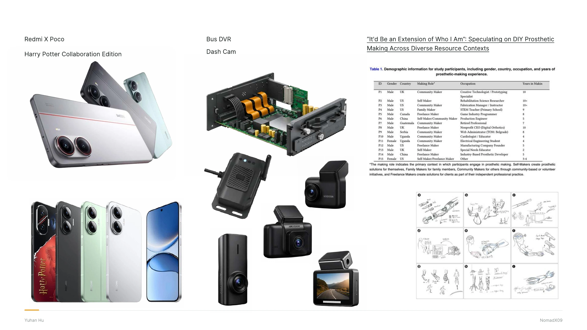

All work
Selected work / 06 · Archive
More Work
This collection includes a Redmi and Poco collaboration, a bus DVR project, and research on DIY prosthetic-making.
View full process
Selected work / 06 · Archive
This collection includes a Redmi and Poco collaboration, a bus DVR project, and research on DIY prosthetic-making.
View full process